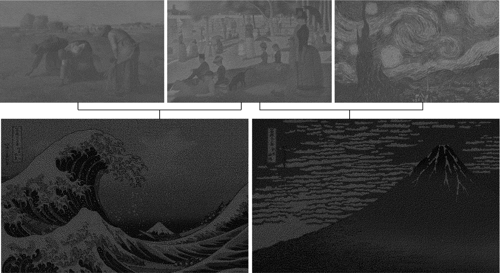
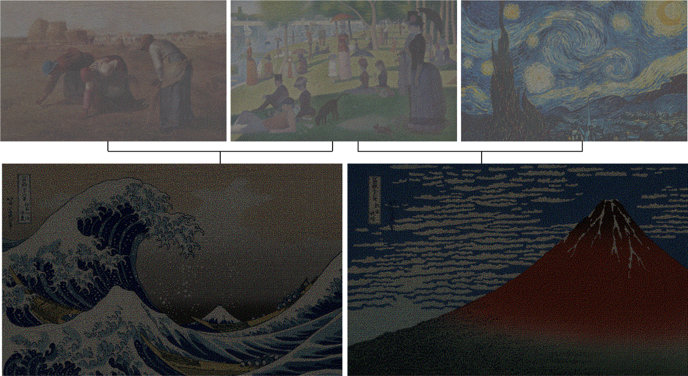
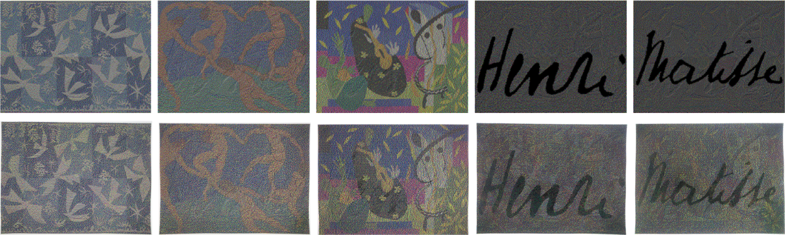
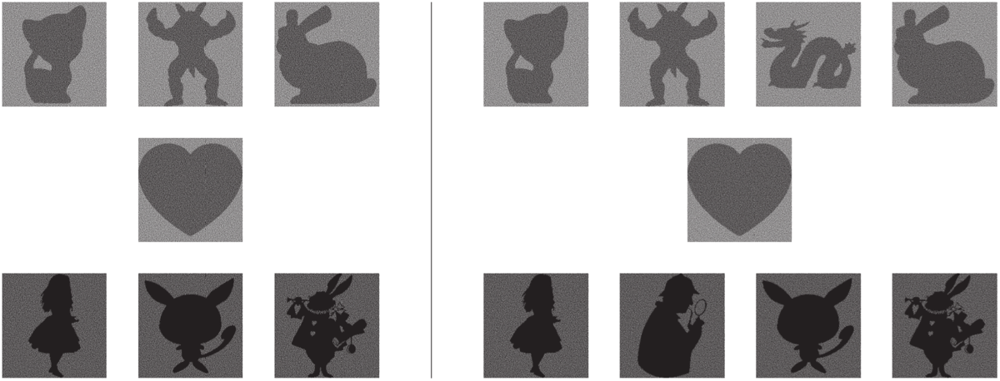

Magic Sheet: Visual Cryptography with Common Shares
- † Japan Advanced Institute of Science and Technology
CVM 2018

Abstract
Visual cryptography (VC) is an encryption technique for hiding a secret image in distributed and shared images (referred to as shares). VC schemes are employed to encrypt multiple images as meaningless, noisy patterns or meaningful images. However, decrypting multiple secret images using a unique share is difficult with traditional VC. We propose an approach to hide multiple images in meaningful shares. We can decrypt multiple images simultaneously using a common share, which we refer to as a magic sheet. The magic sheet decrypts multiple secret images depending on a given share. The shares are printed on transparencies, and decryption is performed by physically superimposing the transparencies. We evaluate the proposed method using binary, grayscale, and color images.Results




Links
Acknowledgements
This work was supported by JSPS KAKENHI Grant numbers 17J04232 and 16K12433.Bibtex
@article{Kita:CVM:2018,
title = {Magic sheet: Visual cryptography with common shares},
author = {Kita, Naoki and Miyata, Kazunori},
journal = {Computational Visual Media},
year = {2018},
month = {Jun},
day = {01},
volume = {4},
number = {2},
pages = {185--195},
issn = {2096-0662},
doi = {10.1007/s41095-018-0108-x},
url = {https://doi.org/10.1007/s41095-018-0108-x}
}